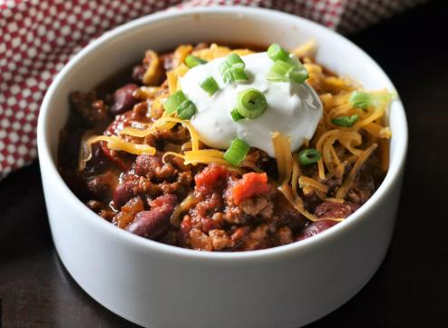

Tequila Chili

Ingredients
- 1 pound ground beef
- 1 (14.5 ounce) can Italian-style stewed tomatoes
- 1 (15 ounce) can light red kidney beans, drained
- 1 onion, chopped
- 1 clove garlic, minced
- 1 (8 ounce) can tomato sauce
- 1.5fluid ounces tequila
- 1 tablespoon chili powder
- 1.5 teaspoons ground cumin
- 1 teaspoon salt
- .5 teaspoon cayenne pepper
Directions
- Brown the ground beef in a large pot over medium heat, breaking it up with
a spoon while it cooks; drain.
- Stir in the tomatoes, kidney beans, onion, garlic, tomato sauce, tequila,
chili powder, cumin, salt, and cayenne pepper; simmer 20 minutes.